Formation contre les arnaques en ligne
Quel est le point comment entre toutes ces personnes ?
Repérer une image en IA
Laquelle est générée par IA ?Which one is AI-generated?
 AVraie photoReal photo
AVraie photoReal photoLaquelle est générée par IA ?Which one is AI-generated?
 AGénérée par IAAI-generated
AGénérée par IAAI-generated BGénérée par IAAI-generated
BGénérée par IAAI-generatedEt en vidéo ? « Will Smith mange des spaghettis »And on video? “Will Smith eating spaghetti”

Mais…

Ces photos vont devenir de plus en plus réalistes.
- On ne peut donc pas se baser (uniquement) sur le fait qu’elles « paraissent vraies ! »
- Dans ce cas, comment ne plus se faire avoir ?
Quels sont les critères pour valider l'information ?What criteria help us validate information?
Mais attention…But be careful…
Pourquoi peut-on se faire néanmoins piéger par ces images ?
L’appel à l’émotion
- Si nous sommes émus par une information, nous avons davantage tendance à y croire, MÊME si elle est fausse !
Le pouvoir de l'IA sur FacebookThe power of AI on Facebook


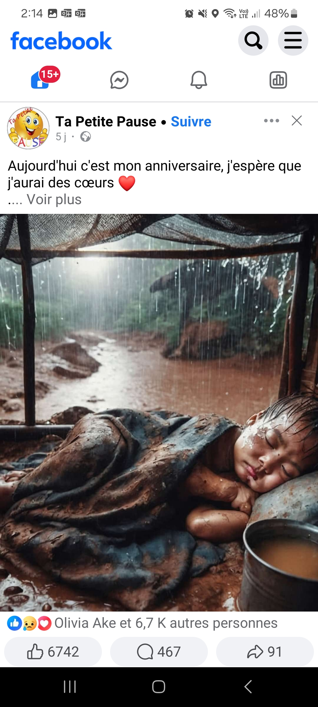
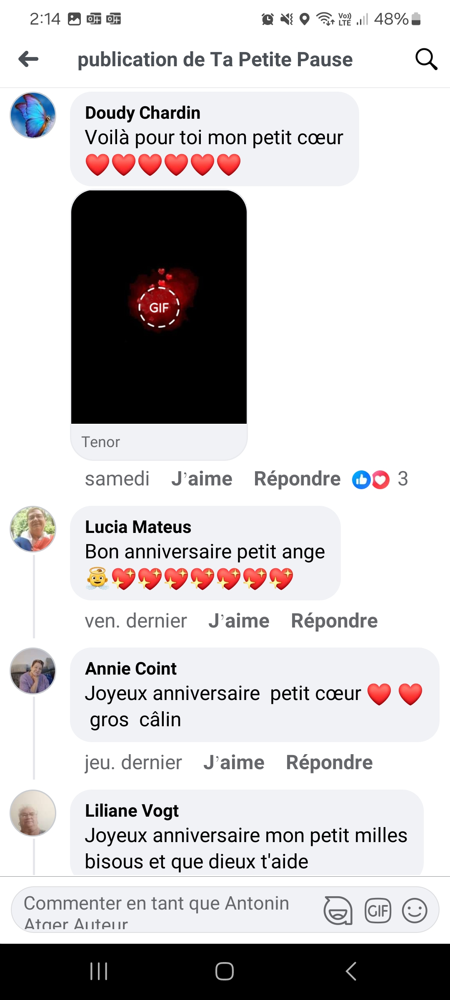
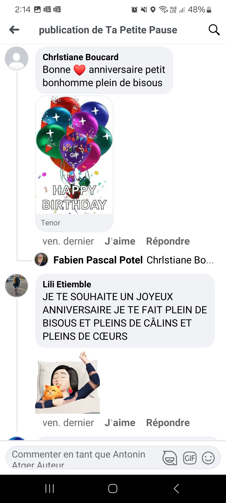
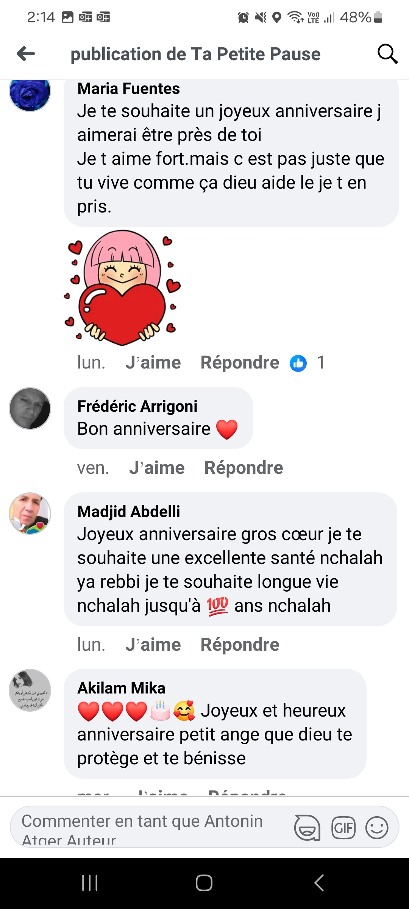
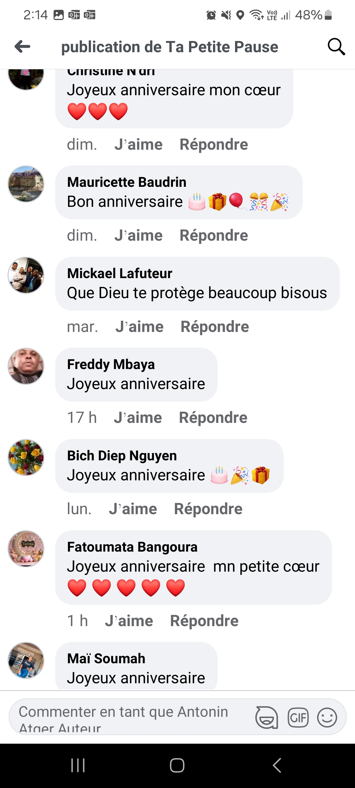
Qu’est-ce qu’un brouteur ?
- Personne qui va créer une arnaque sur Internet.
Plusieurs types d’arnaque
- Sentimentale
- Chantage sexuel
- Fausse convocation judiciaire
- Se faire passer pour une administration
- Faux compte de star

Anne, 53 ans, 830 000 € envolésAnne, 53, €830,000 gone
« C’est une femme comme vous qu’il faut à mon fils. »
« Hello Anne, ma mère m’a beaucoup parlé de vous. J’aimerais en savoir plus. »
« Je suis hospitalisé. On m’a trouvé un cancer du rein. »
Une photo du vrai Brad Pitt avec sa compagne, Inès de Ramon.
Le vrai couple officialise sa relation.
Anne réalise qu’elle se fait tromper depuis plus d’un an.
Comment expliquer qu'on ait pu se faire piéger ?How can we explain falling for it?
Ce n'est PAS la stupidité !It's NOT stupidity!
La solitude
- En plein divorce
- Fragilité psychologique
- Quelqu’un s’intéresse à nous
Rassurer la victime
- La caution d’un tiers
- Les fausses preuves
Biais de l'engagementCommitment bias
Lorsqu'on s'est « engagé » dans une croyance…Once you've "committed" to a belief…

…il est TRÈS compliqué de revenir en arrière.…it's VERY hard to turn back.
Biais des coûts irrécupérablesSunk cost bias
Plus on a donné, plus il est dur d’arrêterThe more you’ve given, the harder it is to stop
On continue d’investir pour ne pas avoir à admettre que ce qu’on a déjà perdu est perdu.We keep investing so we don’t have to admit that what we’ve already lost is gone.
Dissonnance cognitive
Dissonance cognitiveCognitive dissonance
Lorsqu’un fait arrive en contradiction avec nos croyances, on va éprouver un inconfort mental et tenter de l’apaiser en réinterprétant les faits.When a fact contradicts our beliefs, we feel mental discomfort and try to ease it by reinterpreting the facts.
La dissonance cognitiveCognitive dissonance

Le déni plausiblePlausible deniability
Tant qu’on peut encore douter, on s’accroche à ce doute.As long as there is still room for doubt, we cling to it.
Il faut qu’il n’y ait plus aucun doute pour admettre qu’on s’est fait avoir.Only when no doubt is left do we admit we have been fooled.
L’isolementIsolation
« En fait, elle était tellement embrigadée dans cette relation irréelle que notre relation à nous s’est dégradée. »
Sa fille, dans Paris Match Belgique, 13 janvier 2025
La flatterie
C’est Brad Pitt qui me parle, quand même !
Après l’arnaqueAfter the scam
La double peineThe double punishment
L’arnaque à la récupérationThe recovery scam
Un faux « agent du FBI » la contacte pour l’aider à récupérer son argent… contre paiement. Une victime est une cible repérée.A fake “FBI agent” contacts her to help get her money back… for a fee. A victim is a target that has been spotted.
Bitdefender · 17 janvier 2025« …les escrocs, qui ont encore essayé de lui soutirer de l’argent en se faisant passer pour “l’agent spécial du FBI John Smith”, qui s’est proposé de traquer les responsables. »Après l’arnaqueAfter the scam
La moquerieMockery
Bonjour Anne, Brad nous a dit qu’il serait au stade mercredi pour Toulouse-Laval. Et vous ?
« Arrêtez de vous moquer ! Et je ne dis pas ça que pour moi mais pour toutes les victimes. »
Anne, dans C l’hebdo (France 5), 25 janvier 2025
Arnaque sentimentaleRomance scam
Que faire ?What should you do?
À vous : quels réflexes proposez-vous ?Over to you: what would you do?
Chercher la photoSearch the photo
Comment s’en protéger ?How to protect yourself?
- Un appel vidéoA video call
- Jamais d’argentNever any money
- En parler, briser l’isolementTalk about it, break the isolation
Radar’naqueRadar’naque
À vous de jouer : arnaque ou message fiable ?Your turn: scam or genuine message?
Pourquoi ça tombe sur moi ? Ça ne tombe PAS sur vous !
Où blinder les avions ?Where to armour the planes?
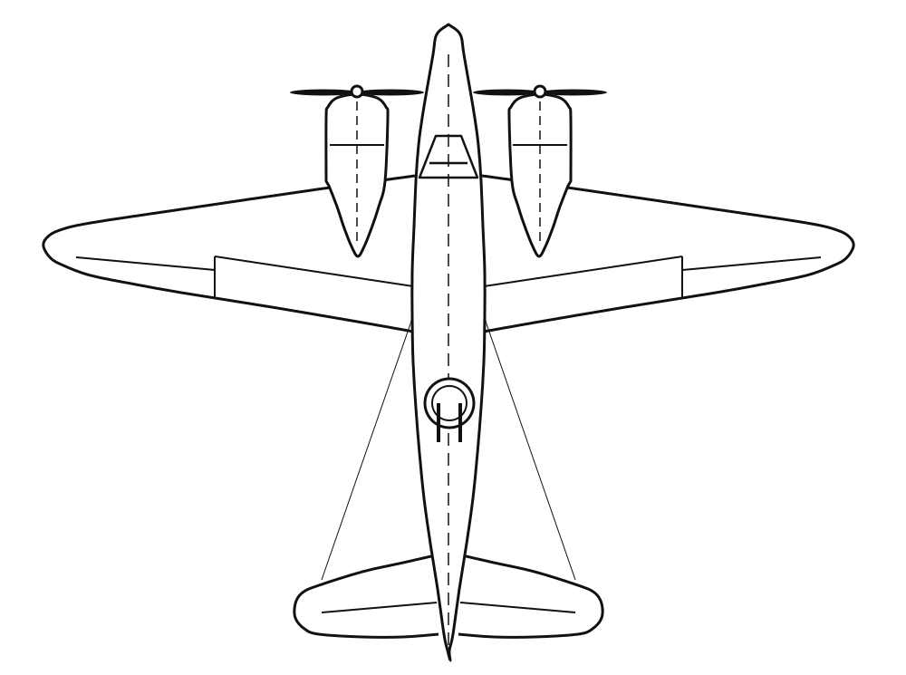
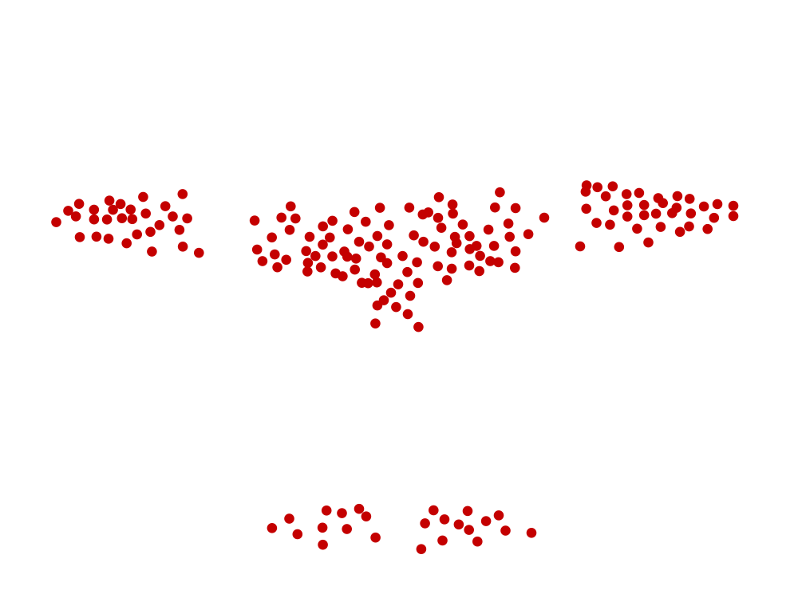
Biais du survivantSurvivorship bias
Et pour les arnaques ?And for scams?
Ce qu’on voitWhat we see
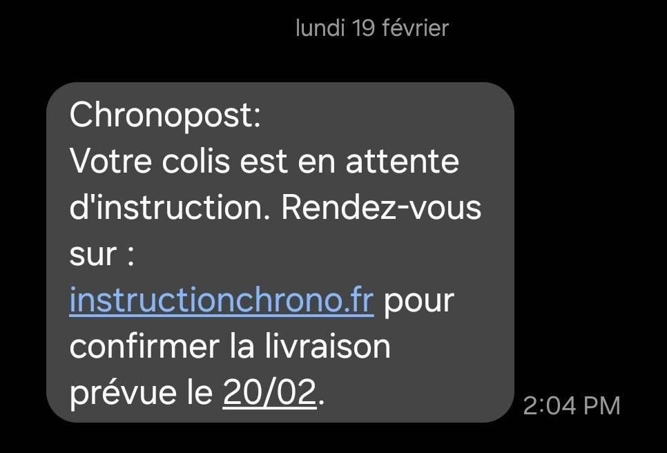
Ce qu’on ne voit pasWhat we don’t see
Le chantage sexuel (sextorsion)
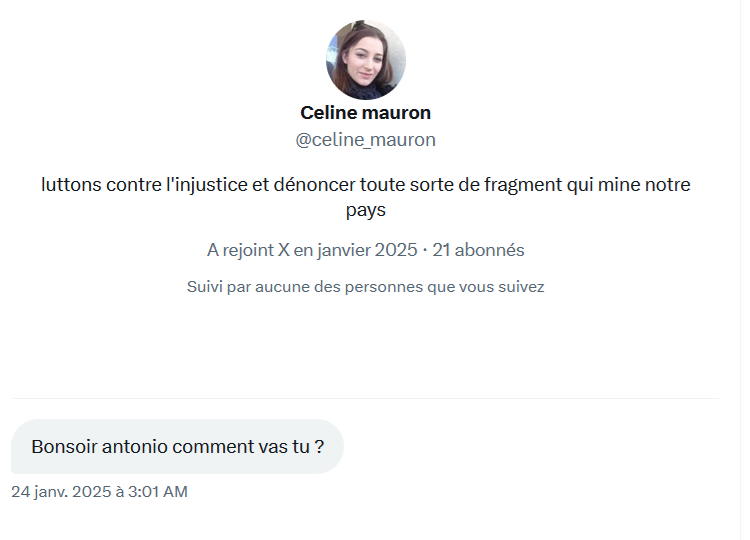
De : vous@votre-adresse.fr
À : vous@votre-adresse.fr
Vous vous demandez probablement pourquoi vous recevez un mail depuis VOTRE propre adresse, n’est-ce pas ? Je vais tout vous expliquer.
Je suis un hackeur et j’ai piraté vos appareils il y a quelques mois, j’ai mis en place un virus sur un site pour adulte que VOUS avez visité et j’ai réussi à avoir la main sur votre appareil. Seulement, j’ai remarqué que vous aviez des goûts très… particuliers en matière de « pornographie ».
J’ai donc abusé de votre appareil pour le transformer en serveur RDP (contrôle à distance) et devinez ce que j’ai bien pu faire
J’ai tout simplement enregistré une vidéo en écran scindé avec d’un côté votre navigateur sur le « site » et de l’autre votre webcam vous enregistrant en train de vous… amuser. C’est comme cela que j’ai pu vous envoyer cet email depuis VOTRE adresse compromise. Suite à cela, j’ai fait une copie de vos contacts, photos, mots de passes, données bancaires et bien d’autre.
Je vous promets que je ne vous dérangerai plus après votre paiement, car vous n’êtes pas ma seule victime. C’est le code d’honneur des hackeurs. Ne m’en voulez pas, chacun son travail après tout… Vous voulez savoir ce que vous pouvez faire
Et bien, je pense que 750 € est un juste prix pour notre petit secret. Vous effectuerez le paiement par Bitcoin (Si vous n’en avez pas entendu parler, recherchez « comment acheter des bitcoins » sur Google).
L’adresse de mon portefeuille Bitcoin :
1EsECgo58y2DqHZPuFT3P4Dm4adUcP3Y5F
(Respectez les majuscules et les minuscules)
Si votre application le supporte, vous pouvez utiliser le code QR pour payer rapidement. Dans le cas échéant, recopiez l’adresse à la main en respectant soigneusement les majuscules et minuscules.
Important : vous avez 72 heures pour effectuer le paiement. (J’ai un traqueur dans ce mail et je sais que vous l’avez ouvert.)
La vidéo ainsi que la copie de toutes ces données sont déjà de mon côté et si vous ne coopérez pas, je serai dans l’obligation d’envoyer la vidéo à vos contacts les plus importants, à votre famille, à vos collègues, sur facebook, twitter et bien d’autres…
Vous avez été infecté par le malware Varenyky. Ceci est votre dernière chance pour vous en sortir !
Fichiers à envoyer si vous ne coopérez pas : masturbation_webcam.mp4
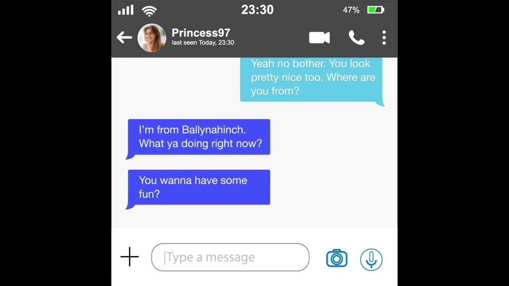
Exemple : le faux profilExample: the fake profile
Coucou 😊 ton profil m’a tapé dans l’œil
📷
À toi maintenant 😏
📷
J’ai tes photos. 2 000 € ou je les envoie à toute ta liste d’amis.
Tu as 24 heures.
Des cas réelsReal cases
Chantage sexuelSextortion
Que faire ?What should you do?
À vous : quels réflexes proposez-vous ?Over to you: what would you do?
Ne surtout pas faire :
- Ne JAMAIS payer !
- Car ils ne vont JAMAIS s’arrêter !
Le phishing / hammeçonnage
- L’escroc se fait passer pour un organisme que l’on connait, pour nous demander de l’argent.
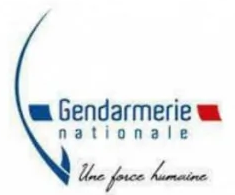
DIRECTION GÉNÉRALE DE LA GENDARMERIE
Je suis Mr Christian RODRIGUEZ, directeur général de la gendarmerie nationale. Je vous contacte peu après une saisie informatique de cyber-infiltration (Autorisée, notamment en matière de pédopornographie, Site Pornographique, Cyber pornographie, pour vous informer que vous faites l’objet de plusieurs poursuites judiciaires en vigueur :
- LA PÉDOPORNOGRAPHIE
- SITE PORNOGRAPHIQUE
- CYBER PORNOGRAPHIE
- DÉTOURNEMENT DE MINEURS
Vous êtes prié de vous faire entendre par mail en nous écrivant vos justifications afin qu’elles soient mises en examen et vérifiées de sorte à évaluer les sanctions ; cela dans un délai strict de 72 heures. Passé ce délai, nous nous verrons dans l’obligation de transmettre notre rapport
À Mme Mélanie BRIARD, substitute du procureur de la République près le tribunal de grande instance de Créteil et spécialiste de cybercriminalité pour établir un mandat d’arrêt à votre encontre, et vous serez fiché comme délinquant sexuel. Votre dossier sera également transmis aux médias pour une diffusion où votre famille, vos proches et toute l’Europe entière verront ce que vous faites devant votre ordinateur.
Maintenant vous êtes avertis.
Cordialement,
Directeur général de la gendarmerie nationale.
DIRECTION CENTRALE DE LA GENDARMERIE
BRIGADE DE PROTECTION DES MINEURS
Adresse : 4 rue Claude-Bernard 92130 Issy-les-Moulineaux
Virus sur Votre Appareil 01/02/2025
Rapport d’alerte créé Sat, 01 Feb 2025 21:20:25 +0100
Cher antoninatger,
Notre système de sécurité a détecté plusieurs menaces critiques sur votre appareil. Ces menaces représentent un risque immédiat pour vos données personnelles et la sécurité de votre système. Une action immédiate est requise.
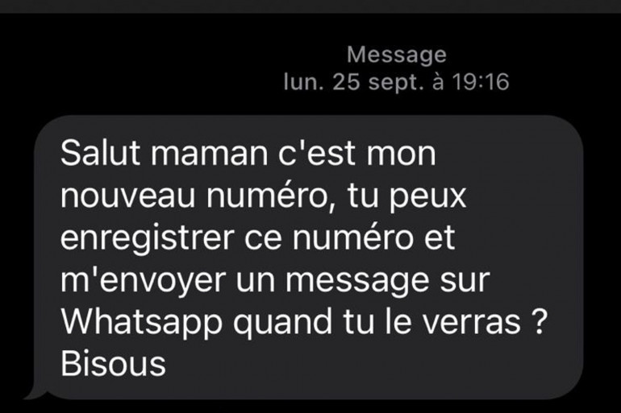
L’arnaque au faux procheThe fake relative scam
« Salut papa, c’est mon nouveau numéro »“Hi Dad, this is my new number”
06 39 98 57 18
Salut papa, c’est moi. J’ai cassé mon téléphone 😩 Voici mon nouveau numéro WhatsApp : 06 39 98 41 27. Écris-moi là-dessus !
Radar’naqueRadar’naque
À vous de jouer : arnaque ou message fiable ?Your turn: scam or genuine message?
Peut-on vraiment cloner une voix ?Can a voice really be cloned?
Ça s’est déjà produitIt has already happened
Mac4Ever · 13 février 2025Arnaque à l’Italienne ! Ils se font passer pour le ministre de la défense grâce à l’IAFaux proche et voix clonéeFake relative and cloned voice
Que faire ?What should you do?
À vous : quels réflexes proposez-vous ?Over to you: what would you do?
Voix clonéeCloned voice
Comment s’en protéger ?How to protect yourself?
Un mot de passe familialA family password
« Tartiflette »
Pas de mot, pas d’argent.“Tartiflette”
No word, no money.
Raccrocher et rappelerHang up and call back
Rappelez la personne sur son numéro habituel, même s’il « ne marche plus ». Le numéro affiché ne prouve rien : il peut être usurpé.Call the person back on their usual number, even if it “no longer works”. The number displayed proves nothing: it can be spoofed.
Une question piègeA trick question
Demandez un souvenir que l’escroc ne peut pas connaître.Ask about a memory the scammer can’t know.
Se taireStay silent
Face à un appel silencieux, ne parlez pas en premier : raccrochez.When a call is silent, don’t speak first: hang up.
L’arnaque au faux conseillerThe fake bank adviser scam
« Votre compte est piraté, un coursier passe chercher votre carte »“Your account has been hacked, a courier is coming for your card”
1. L’appel1. The call
Le numéro affiché est celui de votre banque : il est usurpé. Un « conseiller » signale un virement suspect. Il faut agir vite.The number displayed is your bank’s: it is spoofed. An “adviser” reports a suspicious transfer. You have to act fast.
2. Le code2. The PIN
Pour « bloquer la fraude », il vous demande votre code de carte ou de valider une opération sur votre appli.To “block the fraud”, he asks for your card PIN or to approve an operation in your banking app.
3. Le coursier3. The courier
Un coursier sonne et récupère la carte « pour la détruire ». Parfois, il la coupe devant vous en laissant la puce intacte.A courier rings the bell and takes the card “to destroy it”. Sometimes he cuts it in front of you, leaving the chip intact.
Ensuite, les escrocs retirent et dépensent jusqu’au plafond de la carte.Then the scammers withdraw and spend up to the card’s limit.
Près de chez nousClose to home
Est lyonnais, 2025-2026East of Lyon, 2025-2026
Faux conseillerFake adviser
Que faire ?What should you do?
À vous : quels réflexes proposez-vous ?Over to you: what would you do?
Faux conseillerFake adviser
Les bons réflexesThe right reflexes
RaccrocherHang up
Une vraie banque comprend très bien que vous raccrochiez.A real bank fully understands if you hang up.
Rappeler soi-mêmeCall back yourself
Au numéro inscrit au dos de votre carte, de préférence depuis un autre téléphone.On the number printed on the back of your card, ideally from another phone.
Ne rien donnerGive nothing
Ni code, ni carte, ni validation dans l’appli. Votre banque ne vous les demandera jamais.No PIN, no card, no approval in the app. Your bank will never ask you for them.
Radar’naqueRadar’naque
À vous de jouer : vraie banque ou faux conseiller ?Your turn: real bank or fake adviser?
Le « colis arrivé »
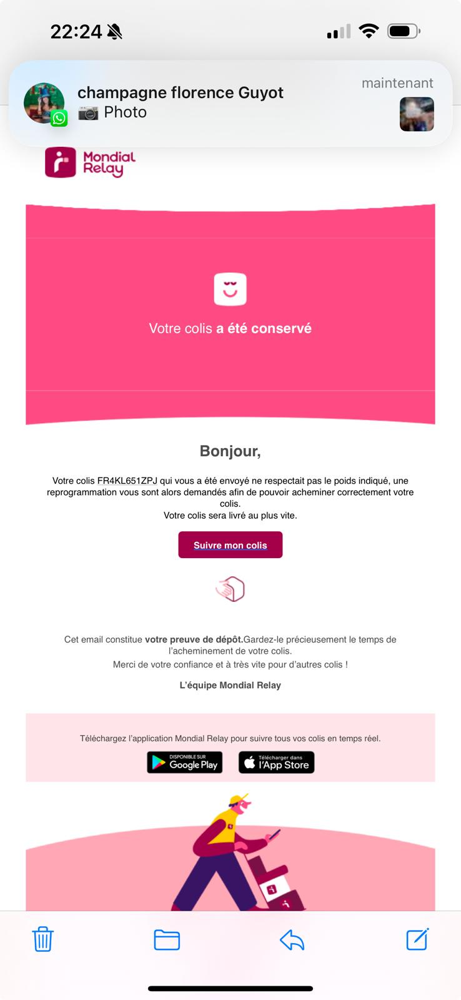
Le « colis arrivé »The “parcel delivered” scam
Que faire ?What should you do?
À vous : quels réflexes proposez-vous ?Over to you: what would you do?
Le « colis arrivé »
- Vérifiez BIEN que vous avez un colis, que c’est le bon service de livraison.
- Attention en période de fêtes !
- N’oubliez pas le biais du survivant !
Radar’naqueRadar’naque
À vous de jouer : arnaque ou message fiable ?Your turn: scam or genuine message?
L’inginérie sociale
- Manipulation psychologique dans le but d’escroquer.
Comment ne PAS se faire avoir
Les fautes d’orthographe
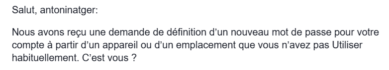
Les adresses emails étranges
s807962@charterschools.ae
banqueDefrance@c0mpte.com
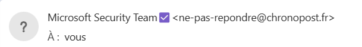
L’URL ne correspond pas
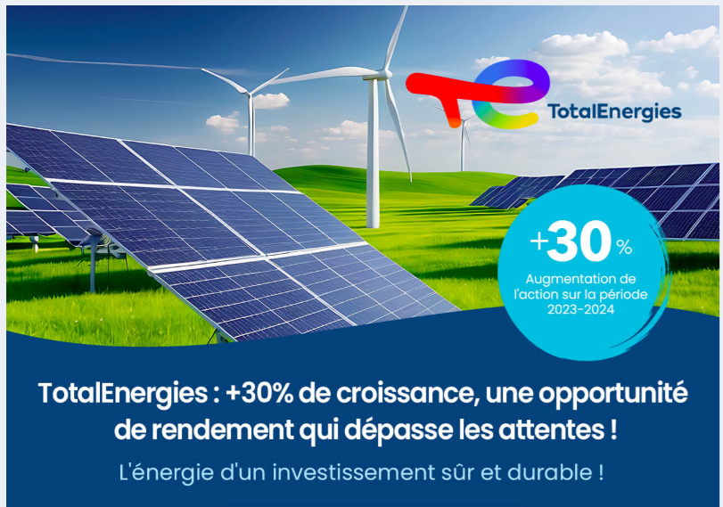
L’URL ne correspond pas
Quand on passe la souris dessus (sans cliquer ! )
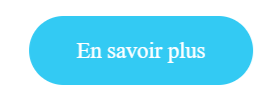
https://emea01.safelinks.protection.outlook.com/?url=http%3A%2F%2Fpetrageuting.de%2Ffwd%2FP2Q9MTMzODcmZWk9NDAyMDE0NiZpZj0yMzI2MiZsaT0zMSZzaT02&data=05%7C02%7C%7C0ff66fa716c04cf23f2708dd36f279fc%7C84df9e7fe9f640afb435aaaaaaaaaaaa%7C1%7C0%7C638727137240307452%7CUnknown%7CTWFpbGZsb3d8eyJFbXB0eU1hcGkiOnRydWUsIlYiOiIwLjAuMDAwMCIsIlAiOiJXaW4zMiIsIkFOIjoiTWFpbCIsIldUIjoyfQ%3D%3D%7C0%7C%7C%7C&sdata=aeHHqWAv2hnHY50CGyGUwFWphwqCN%2BiYuRrnA%2Bgq6kY%3D&reserved=0Faux sites administratifsFake government websites
Payer pour une démarche gratuitePaying for a free procedure
La réalitéThe reality
La vignette Crit’AirThe Crit’Air sticker
3,72 € sur le seul site officiel, certificat-air.gouv.fr.€3.72 on the only official website, certificat-air.gouv.fr.
La réalitéThe reality
La carte griseThe vehicle registration
C’est gratuit sur ants.gouv.fr.It’s free on ants.gouv.fr.
La réalitéThe reality
L’acte de naissanceThe birth certificate
C’est gratuit sur service-public.fr.It’s free on service-public.fr.
Ce n’est pas toujours illégal, mais vous payez pour ce qui était gratuit.It isn’t always illegal, but you pay for something that was free.
Faux sites administratifsFake government websites
Que faire ?What should you do?
À vous : quels réflexes proposez-vous ?Over to you: what would you do?
Comment reconnaître le vrai site ?How to recognise the real website?
Le .gouv.frThe .gouv.fr
Les sites de l’État finissent par .gouv.fr. Un drapeau tricolore ou le mot « officiel » ne prouvent rien.State websites end in .gouv.fr. A French flag or the word “official” proves nothing.
Comment reconnaître le vrai site ?How to recognise the real website?
Les premiers résultatsThe top results
Ces sites achètent les premières places sur Google. Passez plutôt par service-public.fr.These websites buy the top spots on Google. Go through service-public.fr instead.
Comment reconnaître le vrai site ?How to recognise the real website?
Les petites lignesThe small print
En validant, vous souscrivez à un abonnement « Premium » de 49,90 € par mois, sans engagement. Ce site n’est pas affilié à l’administration. Les frais de traitement du dossier ne sont pas remboursables.
Frais de « traitement du dossier », « assistance », pas de mentions légales : méfiance.“Processing fees”, “assistance”, no legal notice: be wary.
Radar’naqueRadar’naque
À vous de jouer : vrai ou faux message des impôts ?Your turn: real or fake tax message?
Le « quishing » : l’hameçonnage par QR code“Quishing”: QR code phishing
Le QR code collé par-dessus le vraiThe QR code stuck over the real one
![Vrai QR code]()
![Faux QR code collé par-dessus]()
Les horodateursParking meters
Nice dès 2024, puis Marseille et Bergerac en 2025. À Bergerac, un vacancier se retrouve abonné à 34 € par mois, sans avoir payé son stationnement.Nice, Marseille, Bergerac in 2025. In Bergerac, a holidaymaker ends up subscribed to €34 a month, without having paid for parking.
Les bornes de rechargeEV charging points
Lyon, août 2026 : un homme de 27 ans est arrêté. Son faux site de paiement finissait en « .site » au lieu de « .com ».Lyon, August 2026: a 27-year-old man is arrested. His fake payment site ended in “.site” instead of “.com”.
Un QR code cache l’adresse du site : on ne voit pas où l’on va avant d’y être.A QR code hides the website address: you can’t see where you’re going until you’re there.
Le « quishing » : l’hameçonnage par QR code“Quishing”: QR code phishing
Dans la presseIn the press
Faux QR codesFake QR codes
Que faire ?What should you do?
À vous : quels réflexes proposez-vous ?Over to you: what would you do?
Faux QR codesFake QR codes
Avant de scannerBefore you scan
ToucherTouch it
Un autocollant, un relief, un bord qui se décolle : méfiance.A sticker, a raised edge, a corner peeling off: be wary.
Lire l’adresseRead the address
Le téléphone affiche le lien avant de l’ouvrir. Ne l’ouvrez que s’il correspond au service.The phone shows the link before opening it. Only open it if it matches the service.
https://paiement-stationnement-nice.site/pay?ref=PRK-88213&redirect=secure-cb-verification.top/loginPayer autrementPay another way
L’appli officielle, le badge de recharge ou le clavier de l’horodateur.The official app, the charging card or the meter’s keypad.
Après un scan, ne saisissez jamais vos codes bancaires ni vos mots de passe.After scanning, never enter your bank details or your passwords.
Les moyens de paiements inhabituels
- Pcs
- Transcash
- Neosurf
- Crypto
AstuceTip
Lorsque quelque chose paraît trop incroyable pour être vrai, généralement c'est faux !When something seems too good to be true, it usually is!
Fausses publicitésFake ads
« Il a fait fortune grâce à cette plateforme »“He made a fortune thanks to this platform”
Le faux articleThe fake article
Il imite Le Monde, Libération ou Le Figaro. Plus de 700 de ces sites ont été repérés en France.It imitates Le Monde, Libération or Le Figaro. More than 700 such websites have been found in France.
La vidéo truquéeThe faked video
2026 : de fausses vidéos du gouverneur de la Banque de France, et un faux « clash » avec Michel-Édouard Leclerc chez Cyril Hanouna.2026: fake videos of the governor of the Banque de France, and a fake “row” with Michel-Édouard Leclerc on Cyril Hanouna’s show.
Le faux conseillerThe fake adviser
Vous laissez votre numéro, un « expert » rappelle en quelques minutes. De faux gains s’affichent, il faut verser toujours plus.You leave your number, an “expert” calls back within minutes. Fake gains appear, and you have to pay in more and more.
Fausses publicitésFake ads
Dans la presseIn the press
Fausses publicitésFake ads
Que faire ?What should you do?
À vous : quels réflexes proposez-vous ?Over to you: what would you do?
Fausses publicitésFake ads
Les bons réflexesThe right reflexes
Une célébrité ne vend pas de placementCelebrities don’t sell investments
Mbappé, Jamel Debbouze ou Élise Lucet ont été utilisés sans leur accord.Mbappé, Jamel Debbouze and Élise Lucet have been used without their consent.
Consulter la liste noireCheck the blacklist
L’AMF publie la liste des sites non autorisés sur amf-france.org.The AMF publishes the list of unauthorised websites on amf-france.org.
« Sans risque » et « très rentable »“Risk-free” and “highly profitable”
Les deux ensemble n’existent pas. C’est le signe d’une arnaque.The two together don’t exist. It’s the sign of a scam.
En 2025, l’AMF a reçu 16 934 demandes d’épargnants, 27 % de plus en un an.In 2025, the AMF received 16,934 requests from savers, 27% more in one year.
Radar’naqueRadar’naque
À vous de jouer : arnaque ou message fiable ?Your turn: scam or genuine message?
Si on vous dit que quelque chose est URGENT, ce n’est certainement pas le cas.
- Ne pas oublier : l’appel à l’émotion, notamment le stress !
Essayons de traquer les faux emails !
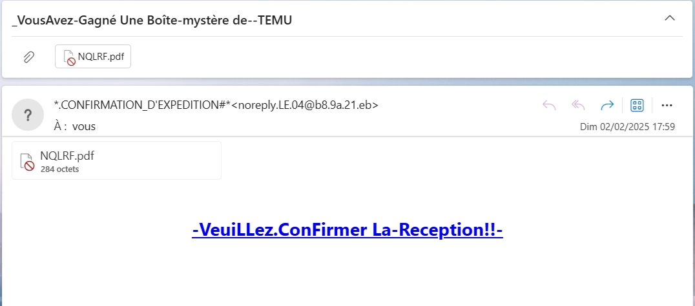
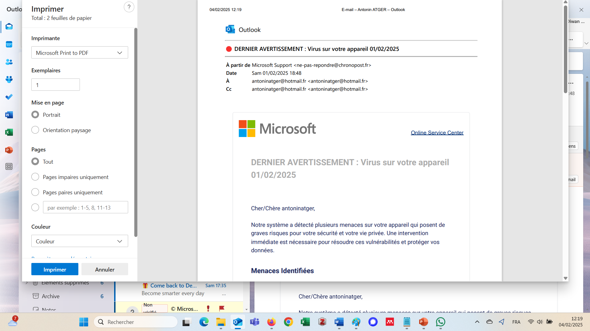
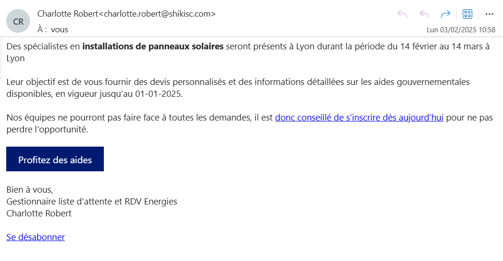
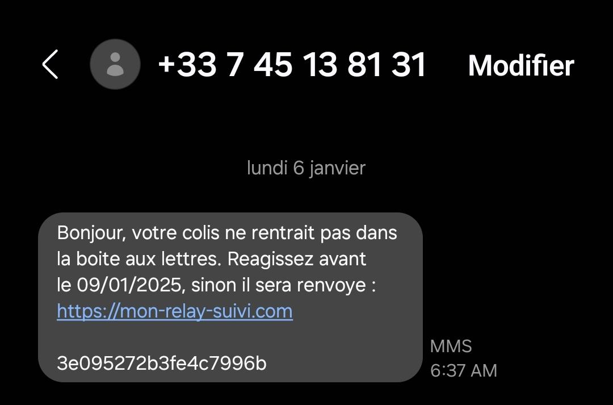
Soyons modestes !Let's stay humble!
Merci !
Après la séanceAfter the session
Le bilan, les jeux, et votre retourSummary, games, and your feedback
Scannez ce QR code : vous pourrez donner votre retour, revoir le bilan de la formation ou rejouer aux jeux.Scan this QR code: you can leave your feedback, review the session summary, or play the games again.
![QR code vers la page antoninatger.github.io/interventions/retours]() antoninatger.github.io/interventions/retours →antoninatger.github.io/interventions/retours →
antoninatger.github.io/interventions/retours →antoninatger.github.io/interventions/retours →